The new version is V3.2.x. EasyEDA has lots of new features in the version. Try it via https://easyeda.com/editor.
If you like to help your friends to use this nice web based EDA tool, you can invite him/her to join EasyEDA. At the same time, you and your friends will get a $5 coupon to order PCB from EasyEDA. Why not to give this feature a try?
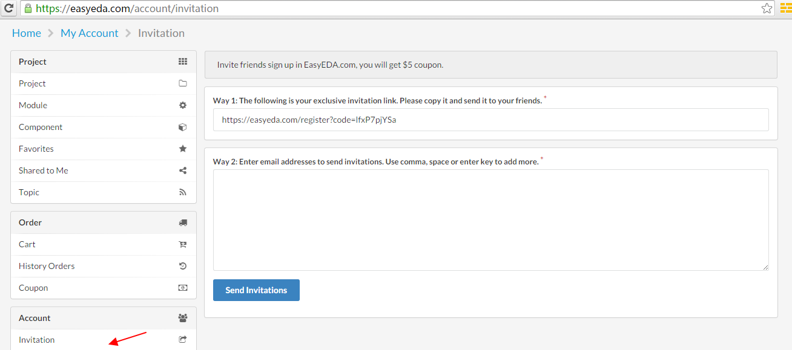
Click this link invite your friends now
It is easy to get this fundtion, right click the document which you need to find it's version like bellow image 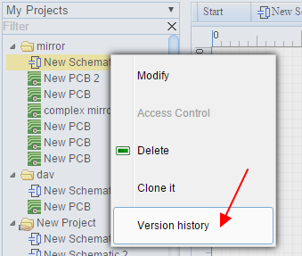
After clicking the history version link, you will get a list of all of the versions like bellow image. 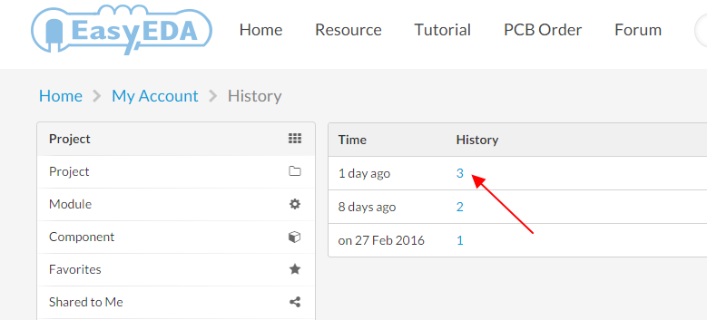, click the version number, you can open the saved file on the editor, if this is what you need, you can save it to your project and delete your bad file.
Note:
For some simply or prototype PCBs, you may want to use the auto router function to save time. Layout is a time cost and dull job. EasyEDA spends lots of time to provide such feature and loved by our users. Steps:
1 Click the the auto router button from the toolbar
2 Config the auto router
After you click that button, you will get a config dialog like bellow image. 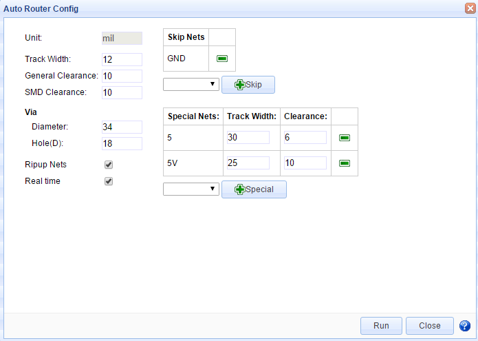 In the config dialog, you can set some rules to make the auto router profession.
If you want to keep the routed tracks, you need unchecked the Ripup Nets
The real time check box will let you see how it is going, but it will make the process a bit litter slow.
If you like to keep the a net no route, you can skip it. For example, if you want to use copper area to connect GND net, you can skip the GND net.
For the power supply track, you may want it to bigger, then you can add some specail rules.
3 Run it
Click the run button, waiting for a few seconds, after add bottom and top copper area, you will get a finished PCB board like bellow image.
Some time, if you can't get it done, try bellow tips.
Some profession guys don't like the auto router, because they think auto router is not profession, but you can the auto router to check your placement. to check the density of your PCB.
On PCB and PCB Lib editor, there is a new feature on the PCB Tool bar like the bellow image.
After click it and select the image, you will goto bellow image.
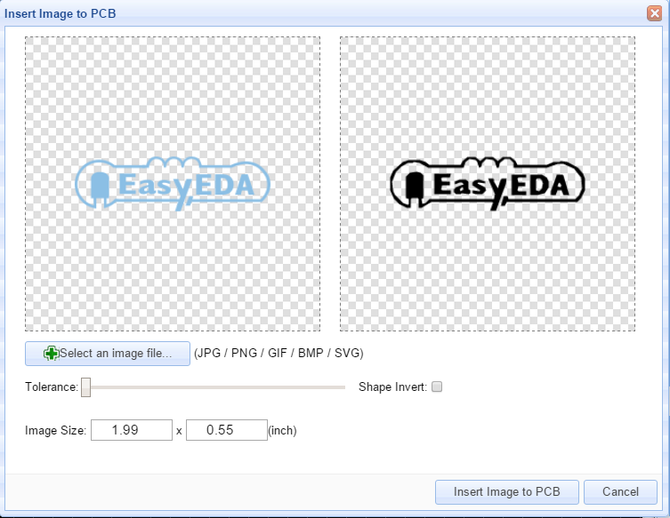 In this dialog, you can choose your favorite image, EasyEDA support jpg, BMP, 'PNG, 'GIF, and SVG. not likes some other EDA tools, they just support a Monochrome Bitmap image, EasyEDA support full color. but Monochrome Bitmap is welcome.
You can adjust the tolerance and reset the image size at there.
The image will be inserted to the active layer, if it is not right, you can change the attribute of it. Such as TopSilkLayer.
From V3.2.x, You can add more fonts from your computer or download some free fonts .
Select the text, then you can find a Font-family attribute on the right panel like bellow image. 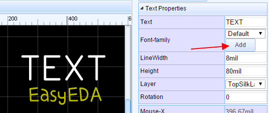 Click the add button, then choose the font, the font file must be ttf or otf. 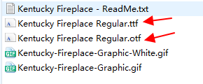
So you can add any fonts by your self. EasyEDA desn't cache the font on our server, so if you close the editor, you need to add the font again by your self.
Note:
If you use the other font, the LineWidth attribute is useless, because it will be auo by change the Height.
Some times, we need to change some attributes in the same together, such as the track width, hole size and font size.
Now, you can select them and do some changes. Taking the track for an example. If you select 3 tracks, now you can change their Width, Layer, Net together. 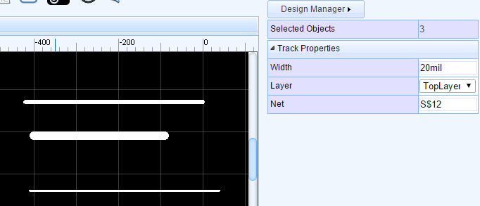
Other items such as Pad, Via, and TEXT, you can try to play this feature.
When routing, some time we need to add an Arc segment, or change the inflection direction. Now we can do this easily. 1. Change to Arc style, You can use Hot key L to toggle from 45 degree to Arc. 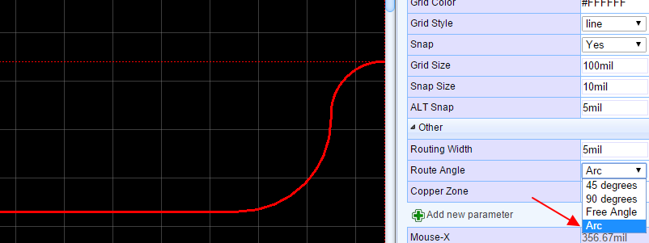
You can change inflection direction when router, from A to B, we have two ways. When you router from A to B, the default track is 1, but if you press Space bar key, the track will be changed to 2. 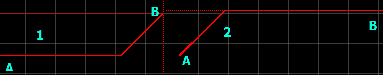
Copying codes is an easy job for coders, now copy and reuse a schematic or PCB are easy now. Take a power supply unit for example, you can save this unit as a schematic module.
After saving, you can find it at the module section. And you can place the whole block to your schematic.
For company users, after order PCB, they may need an invoice, you can find it at . History orders. There is an invoice link, you can open it and save it as pdf or html file. 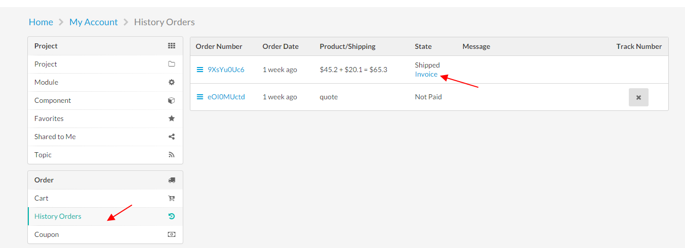
Right click your parts, you can share symbols and package to EasyEDA system libs, then, every one can use them as their own parts. 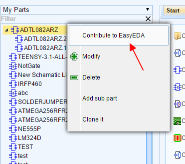
In lots of other EDA tools, the track is segment line, but in EasyEDA, the track is polyline. some time, if we want to delete a segment, we must delete the whole track and router again. Now we provide a not bad way to do this. Moving your mouse to the segment which you want to delete, click it, then hold the SHIFT and double click it. the segment will be removed.
Some users don't like the cross cursor, so you can change it to arrow cursor like bellow image.
On How To Find The Schematic Libraries, you can find a way to use many many components and package, now EasyEDA provide a great navigation bar on the top. You can use some open source parts and Pololu Module , like bellow image. 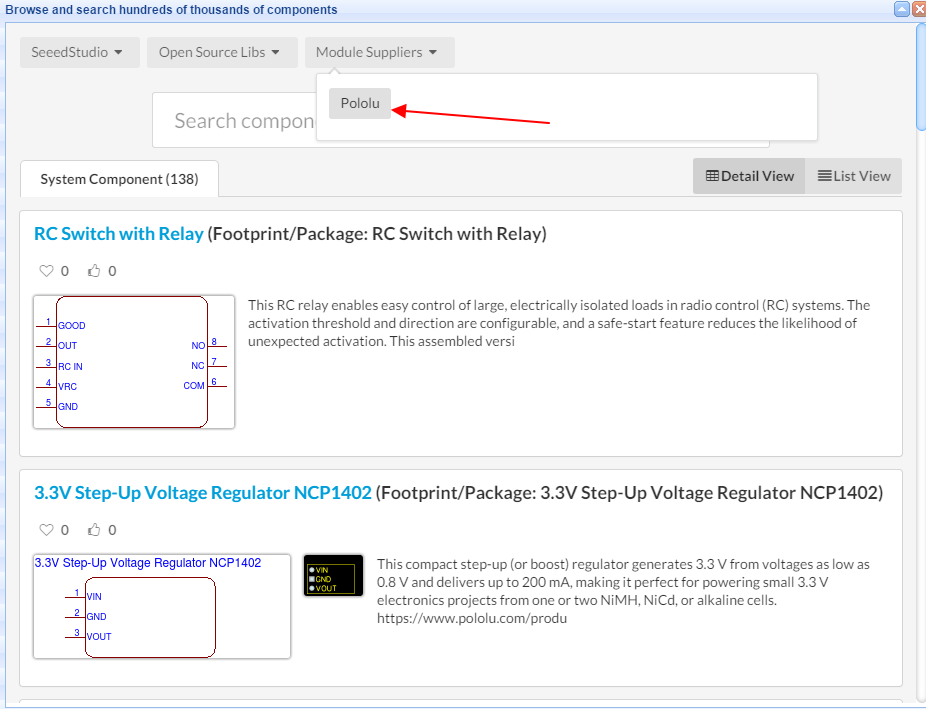
Enjoy it, if you have any questions, do let us know.